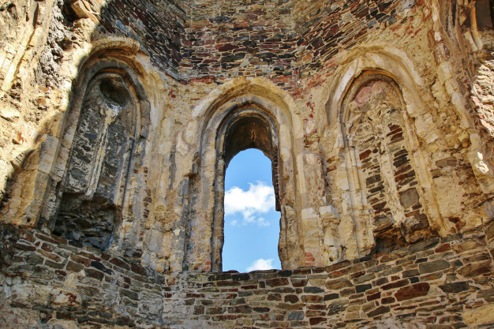

SORIA
LOCALIZACIÓN

Fuente: Wikipedia: Soria
LOCALIDADES PRINCIPALES
- Soria
- Almazán
- Burgo de Osma / Ciudad de Osma
- Ólvega
- San esteban de Gormaz
- Ágreda
- Golmayo
- San Leonardo de Yagüe
- Covaleda
- Arcos de Jalón
GEOGRAFÍA
Soria cuenta con 10.306 Kms. cuadrados de inigualable belleza paisajística.
La provincia presenta una geografía muy irregular que se traduce en un heterogéneo paisaje que incluye desde la alta montaña hasta los valles más profundos, pasando por los característicos pastizales de verano. Bosques y riachuelos donde abundan la caza y la pesca; parajes solitarios, en donde descansar del trepidante ritmo de la vida moderna; espacios naturales protegidos donde encontrar las más variadas especies vegetales y animales; todo lo que puedas imaginar, está en Soria.
Su clima, al igual que el paisaje, es muy irregular; hecho que permite dividir la provincia en zonas claramente diferenciadas. Por un lado se encuentran las Tierras Altas, la sierra situada entre el Moncayo y el Urbión, atravesada por innumerables puertos y con los paisajes helados más atrayentes.
Al oeste se encuentra la denominada Soria Verde, la más extensa masa forestal de la Península donde prevalecen la industria maderera y el turismo rural. La zona oriental, antiguamente zona de pastoreo, se encuentra en la actualidad prácticamente despoblada, pero sus pueblos siguen conservando todo el encanto de antaño.
En la zona sur se localizan los altos páramos; mientras que en el centro se sitúan la zona cerealista y la vitivinícola de la Ribera del Duero. Por último, la Soria Capital, la tranquila y apacible ciudad que conserva todo el atractivo artístico de su período de mayor actividad histórica, la Edad Media.
La diversidad de su clima y sus tierras hace posible que todo aquel que se acerque a la provincia disfrute de sus actividades y deportes preferidos para su tiempo de ocio, rodeado por un paisaje de belleza inconfundible, en unos pueblos y villas llenos de historia.
HISTORIA
En sus tierras encontramos restos prehistóricos de incuestionable valor, entre las que destacan las pinturas rupestres, conservadas en diferentes abrigos. Dos de los yacimientos más importantes son los de Torralba y Ambrona, yacimientos paleontológicos y arqueológicos que corresponden a varios niveles fosilíferos con industria lítica achelense (Paleolítico Inferior) asociada, de hace al menos unos 350 000 años.
La provincia de Soria nace, al igual que todas ellas, con la división provincial española de Javier de Burgos de 1833. No obstante, existían en la Corona de Castilla desde finales del siglo xvi unas entidades de carácter meramente fiscal llamadas provincias, carentes de cualquier valor administrativo o jurídico y que convivían con muchas otras estructuras diferentes21. Entre ellas había una con sede en la ciudad de Soria. Estas no se deben confundir con el concepto de provincia actual. Más tarde, en el siglo xviii, se crearían las intendencias y por último en el siglo xix las provincias en el sentído político actual del término.
A comienzos de siglo xix, la provincia sufre varios cambios. En 1802, las poblaciones del Partido de Logroño pasan a formar parte de la provincia de Soria, y una nueva reforma de 1812 convierte tres cuartas partes de La Rioja en parte de la provincia soriana.23 Sin embargo, tras la reforma de Javier de Burgos de 1833, que crea todas las provincias españolas en el sentido político actual del término y entre ellas la actual de Soria, pasa a tener 10 400 km², una merma de 3763 km² si se compara con la provincia en el Antiguo Régimen. Los territorios perdidos principalmente por la provincia de Guadalajara y la provincia de Logroño. El territorio aún incluido en la provincia se constituye en 540 municipios constitucionales divididos en cinco partidos judiciales.
La provincia pasa a pertenecer a la región de Castilla la Vieja en 1833, y a ella la adscribían muchos otros planes de organización territorial decimonónicos. El de Patricio de la Escosura de 1847 la unía a la región de Burgos (Junto con Burgos, Santander y Logroño). El intento de organización territorial de Francisco Silvela en 1891, adscribía la provincia de Soria a Aragón (junto con Huesca, Logroño, Teruel y Zaragoza).
CULTURA
- Semana Santa
- Declarada Fiesta de Interés Turístico Regional de Castilla y León.67 Sus tallas se encuentran a la altura de las gandes tallas castellanas (de gran valor artístico en escultura policromada) que participan en la Semana Santa en Castilla y León. Como muestra de ello, se puede contemplar durante la Semana de Pasión la bella imagen del Cristo del Humilladero (siglo XVI), atribuido a Juan de Juni o a su escuela.
- Fiestas de San Juan
- Declaradas Fiesta de Interés Turístico Regional de Castilla y León.68 De larga historia, según algunas interpretaciones es incluso mencionada en el Fuero de Soria de 1110.69 Actualmente se celebran en torno al 24 de junio coincidiendo con el solsticio de verano, comenzando siempre un miércoles y concluyendo la noche del lunes siguiente. La referencia para situar en el calendario estas fiestas es el día de la semana en el que cae el día de San Juan, si coincide en jueves, las fiestas comienzan el miércoles 23, si es cualquier otro día de la semana, las fiestas comienzan el miércoles siguiente. La ciudad se distribuye durante sus fiestas en "las doce Cuadrillas", cada una con el nombre de un Santo. Junto a la figura del toro, las Cuadrillas son las protagonistas de los Sanjuanes y proviene de la antigua distribución medieval de la ciudad, en dieciséis barrios o collaciones. Las Cuadrillas son las encargadas de proveer el toro para el viernes, de repartir las tajadas entre los vecinos que han entrado en Fiestas el sábado y el domingo, de organizar los Agés, de preparar la Caldera y sacar en procesión a los santos de Cuadrilla el Lunes de Bailas.
- Fiestas de San Saturio
- Fiestas patronales de la ciudad, celebradas del 1 al 5 de octubre, si bien las actividades se extienden a los fines de semana anteriores y posteriores.
- Carnaval de Soria
- Comienza el jueves anterior al Miércoles de Ceniza, el llamado Jueves Lardero, documentado al menos desde el siglo XVII70 Es tradición del Jueves Lardero ir a merendar a los parajes cercanos a la ciudad. En sus orígenes el Jueves Lardero no marcaba el inicio de los carnavales y los chicos reclamaban la gallofa por las casas para poder preparar luego la merienda. También está documentada otra tradición, perdida y recuperada en 2018, que consistía en correr dos toros de fuego construidos en madera el Lunes de Carnaval.71 El último día se realiza el Entierro de la Sardina, con quema de la sardina en el río Duero.
NATURALEZA
Varios espacios naturales protegidos existen en la provincia de Soria:
- Cañón del Rio Lobos
- Laguna Negra y los Circos Glaciares de Urbión
- Sabinar de Calatañazor
- Acebal de Garagüeta
- La Fuentona
Fuente: Excursiones y rutas por CyL
TRADICIONES
Soria tiene unas tradiciones basadas en fiestas:
- Fiestas de San Juan o de la Madre de Dios
- Semana Santa Soriana
- Jornadas de la Matanza
- Semana Santa de El Burgo de Osma
- Fiestas de San Pascual Bailón y El Zarrón
- La Bajada de Jesús
- La Soldadesca de Iruecha
Y muchas más...